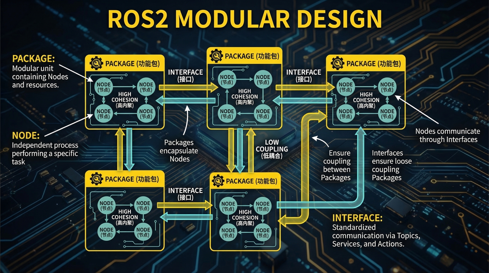

高内聚 (High Cohesion)
模块内部元素紧密相关
低耦合 (Low Coupling)
模块间依赖最小化
ros2 pkg create my_package | 包含: src/, launch/, config/
每个功能包独立功能: 传感器驱动、导航算法、UI界面
Topic / Service / Action 定义清晰的接口契约
实现模块可替换: 仿真模型 <-> 真实硬件
Launch文件协调多节点启动 YAML配置文件管理参数
ros2 launch pkg_name launch_file.py
飞行控制
感知模块
规划算法
任务管理

模块化优势：独立开发测试 / 代码复用 / 故障隔离 / 团队协作
ros2 pkg list | ros2 pkg executables [pkg_name] | ros2 pkg xml [pkg_name]
标准接口定义 = 模块化的核心